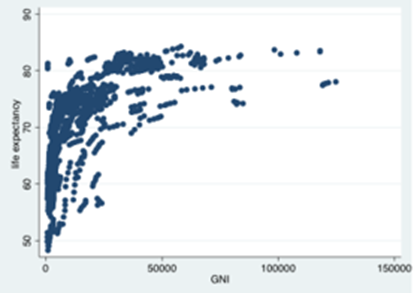
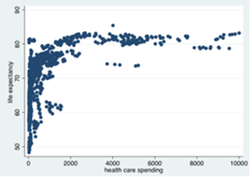
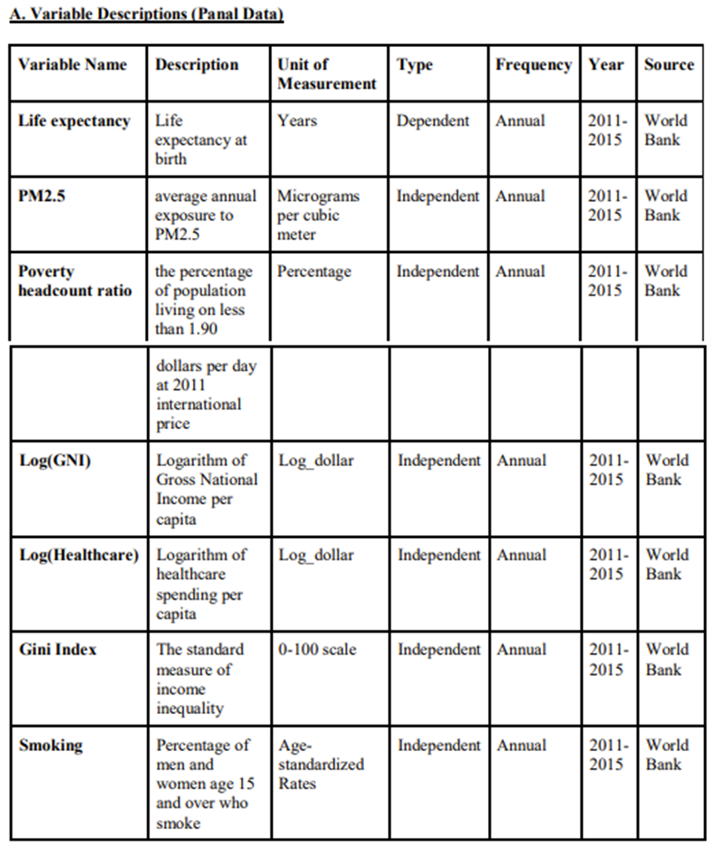
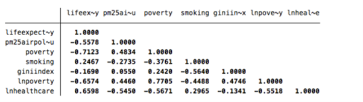
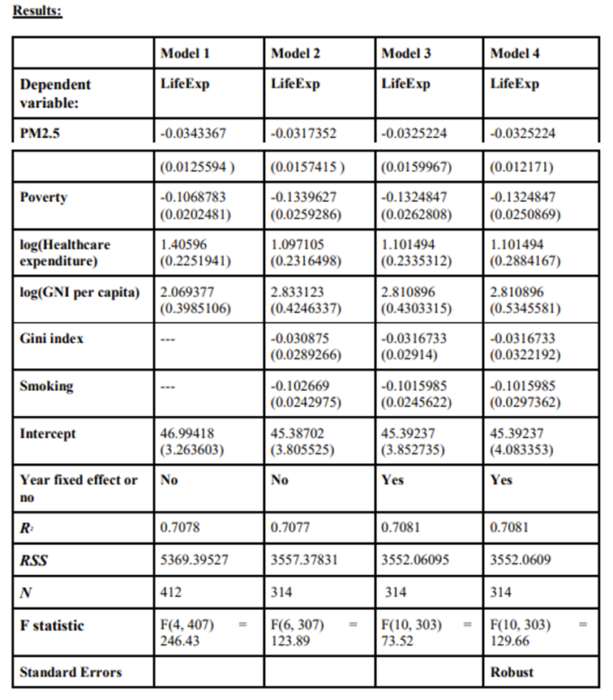

Multiple Linear Regression to Analyze How PM2.5 Air Pollution Affects Our Life Expectancy

Background:
During Fall 2018, I had taken an econometrics class at UC Berkeley that involved writing a research paper that deals with analyzing the relationship between ANY 2 variables of your choosing.
During this time, I had just witnessed and experienced the wildfire that occurred in California, which later became the deadliest in all California history. Inspired by this horrific event, I became curious to know how PM2.5 air pollution is affecting the life expectancy of the population on planet earth, and to what degree it is affecting it. As a result, I decided to build a multiple linear regression model to analyze this very question.
Solution:
For my multiple linear regression model, in addition to PM2.5 as my independent variable, I also I included 1) Gross National Income per capita in dollars, 2) Poverty, measured by headcount of people earning under 1.90 dollars per day, 3) Gini Index, which measures income inequality, 4) smoking prevalence, and 5) dollars amount spent on healthcare per capita as these are some of the major factors as well affecting our life expectancy.


My project consists of four models. In the first model, I ran the regression of life expectancy on the PM2.5, poverty headcount ratio, GNI per capita, and health care spending per capita. To avoid omitted variable bias, I included two more independent variable, namely smoking and Gini Index in the second model. In the third model, I included time fixed effects to control for omitted variables that are hard to measure but constant for all the countries and vary through years. In the fourth model, I included robust standard error to control for heteroskedasticity. All outputs are generated in the statistical software, STATA.
The data used for my models are all collected from the World Bank website (Note: The data collected is from 2011 to 2015 from 264 countries).


Life expectancyit = α + β1PM2.5it + β2Povertyit + β3log(Healthcare expenditure)it + β4log(GNI per capita)it + β5Smokingit + β6Gini indexit + uit i = 264 countries and regions listed on dataset from World Bank t = 2011, 2012, 2013, 2014, 2015
Conclusion:
Overall, the results show that PM2.5 negatively affect life expectancy. With increasing PM2.5, life expectancy is expected to decrease; 1 unit increase in PM2.5 is expected to decrease life expectancy by 0.0325224 year. The coefficients of poverty and log(GNI) per capita show that socioeconomic conditions do affect life expectancy. Poverty would negatively affect life expectancy, while log(GNI) per capita would positively affect life expectancy. Furthermore, healthcare expenditure is also one of the two independent variable that would also positively affect life expectancy. However, surprisingly, I found that Gini index, even though with a negative coefficient, does not play a really important role in life expectancy since the pvalue is large (0.326). And finally, I have also come to discover that smoking does indeed negatively affect life expectancy.